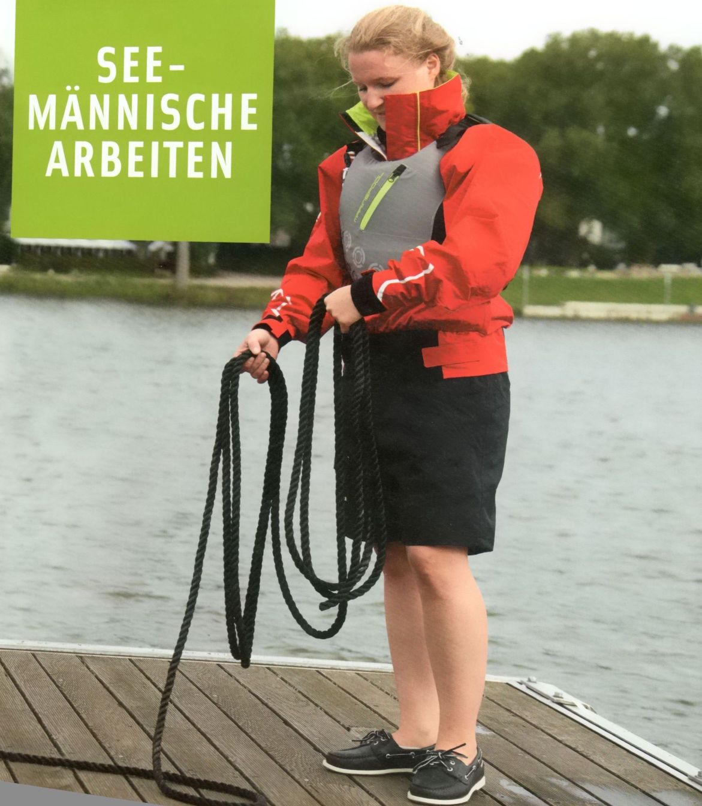
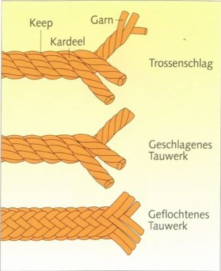
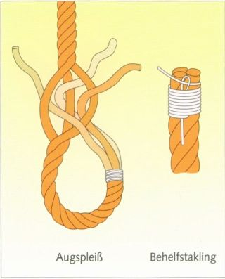

Трос моряки называют «концом» (Ende) или «линём» (Leine). Оба конца троса называются тампенами (Tampen). Так же тампеном называют и короткий обрезок троса.
Рекомендации по безопасности Немецкого союза яхтсменов (Deutscher Segler-Verband) и Немецкого союза владельцев моторных яхт (Deutscher Motoryachtverband) содержат сведения о правильном оснащении лодки тросами.

Для изготовления тросов применяются:
Синтетические волокна (Kunstfasern) (полиэстер, полиамид, полипропилен, полиэтилен, арамид) и стальная проволока (Stahldraht). Трос из синтетических волокон не гниёт и почти не стареет. Он обладает высокой прочностью на разрыв, малым удельным весом и почти не впитывает воду. Однако он теряет прочность под воздействием тепла, трения и ультрафиолетового излучения, а также чувствителен к перетиранию.
Полиэстер (Polyester) (PES) - торговые названия Dacron, Trevira, Terylene и Diolen - почти не растягивается и поэтому особенно хорошо подходит для фалов (Fall) и шкотов (Schot).
Полиамид (Polyamid) (PA) - торговые обозначения Perlon, Nylon - сочетает чрезвычайно высокую прочность на разрыв с большой эластичностью. Поэтому он особенно хорошо подходит для якорных (Ankerleine) и буксирных (Schleppleine) концов.
Полипропилен (Polypropylen) (PP) - торговые названия Polyprop, Hostalen PP, Ulstron - это очень лёгкий плавучий трос со средней прочностью на разрыв. Подходит в качестве швартовов (Festmacher) и шкотов для лёгкой погоды (Leichtwetterschot).
Полиэтилен (Polyäthylen) (PE) - торговая марка Dyneema - обладает лучшими свойствами среди всех синтетических волокон.
Арамид (Aramid) - торговая марка Kevlar - значительно прочнее на разрыв, чем полиэстер, но обладает низкой стойкостью к изгибу, например, при прохождении через блок фала (Fallrolle) малого диаметра.
Стальной трос (Drahttauwerk) для стоячего такелажа (Verstagung) и в качестве форлопера (Vorläufer) фалов изготавливается из нержавеющей стали, из сплавов на хромоникелевой основе, известных под марками V2A и V4A.
Волокна прядут в каболки (Kabelgarn) , каболки скручивают в пряди (Kardeel) , а пряди свивают или сплетают в трос. Витой трёхпрядный трос - он состоит из трёх прядей - называют тросовой свивкой, четырёхпрядный вантовой свивкой.
Трос преимущественно свивают вправо. Правую свивку называют Z-свивкой, левую - S-свивкой. Если волокна спрядены в каболку вправо, каболки скручены в прядь влево, а отдельные пряди свиты в трос вправо, получают свивку ZSZ.
Сплесень (Spleiß) - это постоянное соединение тросов путём переплетения отдельных прядей.
Чаще всего применяется огон (Augspleiß) на ходовом конце (Tampen) троса. Научиться делать его можно только на практике.
Каждый ходовой конец (Tampen) нужно закрепить, чтобы трос не начал распускаться. Синтетический трос легко оплавить над пламенем. Более аккуратный способ - наложить на ходовой конец такелажной ниткой (Takelgarn) марку (Takling) . Этому также лучше всего учиться на практическом занятии.
